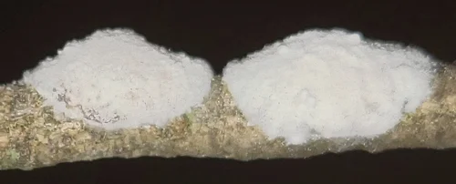

Sticky magnolia foliage beneath large bumps on twigs
When honeydew drips from a magnolia, inspect the twigs overhead before washing the leaves. Magnolia scale lives on the woody shoots. Liquid excreted by the feeding insects can coat objects well below the actual colony.

Where to look
Stand beneath the sticky area and follow the affected branch outward. Look around the circumference of its smaller twigs for large oval scales, sometimes packed so closely that the bark is difficult to see.
What confirms it
Notice any whitish wax and the color of the mature scales underneath. Black sooty mold or wasps visiting the honeydew can draw attention to the infestation before anyone notices the insects themselves.
Similar damage
Compare several twigs on the same tree. Normal buds follow a shoot’s growth pattern, while scales can crowd unrelated portions of the bark. Soot on the leaves alone cannot identify the sap feeder.
What to do
Prune localized heavily infested twigs where this preserves the shrub’s structure. For more widespread infestations, ask for local guidance on crawler timing before treating the plant.
Follow-up
Revisit live shoots above recently cleaned surfaces for renewed honeydew. Old black deposits can persist after feeding declines, so include direct observations of the scales in the next assessment.